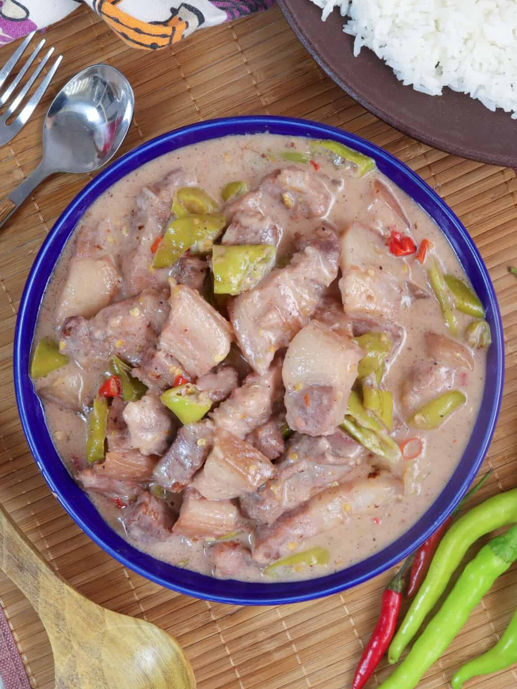

Home
Bikol Express

Description
This Bikol Express recipe is taken from this website: Here
Bikol Express is a known dish that will rock your taste buds! It's rich, creamy, spicy, and delicious, with pork cubes cooked in coconut milk and chili peppers. It is usually paired with a steamed rice for the family to enjoy.
This dish originated from the province of the Bicol region, known for its spicy, coconut milk-based dishes, but its named version was popularized by Cely Kalaw in a Manila restaurant in the 1960s/70s, named after the Manila-Legazpi train to denote its spicy journey from the region to the capital. While Bicolanos already made similar spicy stews sold at train stops, Kalaw's adaptation and naming brought it widespread fame, evolving into the beloved dish known today.
Ingredients
- Finger Chilies
- Onion
- Garlic
- Cooking Oil
- Thai Chili Peppers
- Water
- Coconut Milk
- Coconut Cream
- Fresh Shrimp Taste
- Pork Belly
- Pepper
- Salt
Steps
- Brown the Pork. Saute aromatics in oil in a wide pan over medium heat until softened. Add pork and cook until lightly browned. Add shrimp paste and cook for a few minutes.
- Add coconut milk and water. Coconut milk tends to curdle or separate when brought to a boil or heated too quickly. Cook in a gentle simmer to ensure a smooth, creamy sauce.
- Cook pork. Add chili peppers. Cover and simmer until the pork is tender and the liquid is reduced.
- Add finger chilies and coconut cream and continue to simmer until thickened and begins to render fat. Season with salt and pepper to taste.